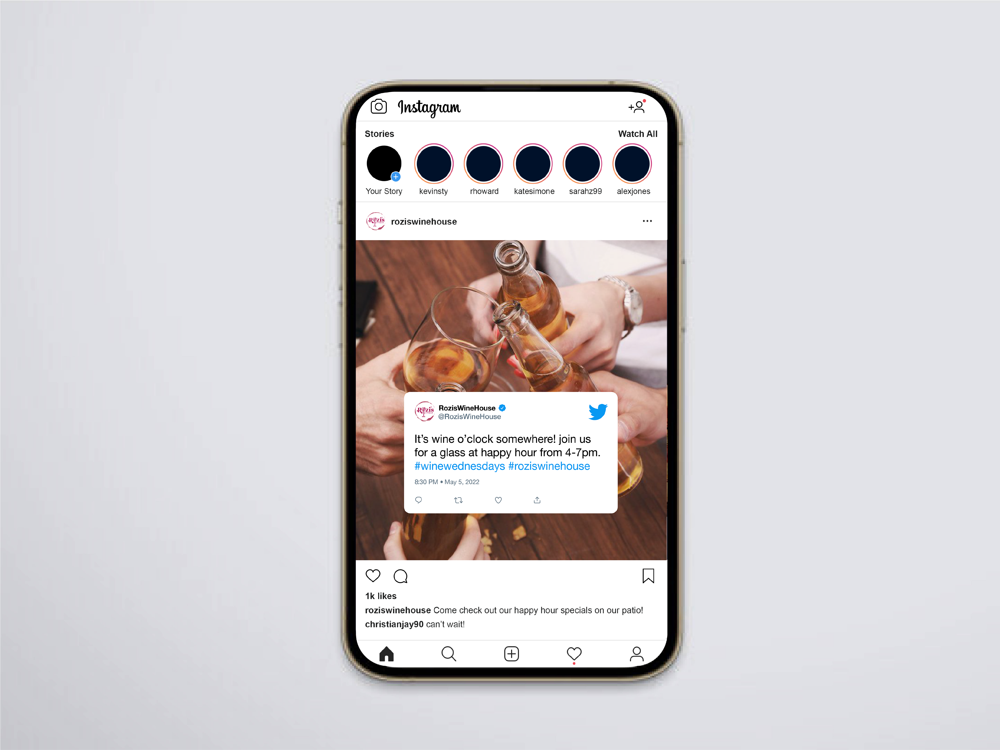
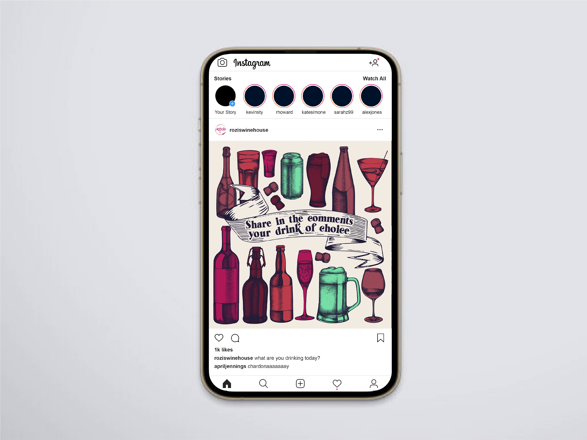
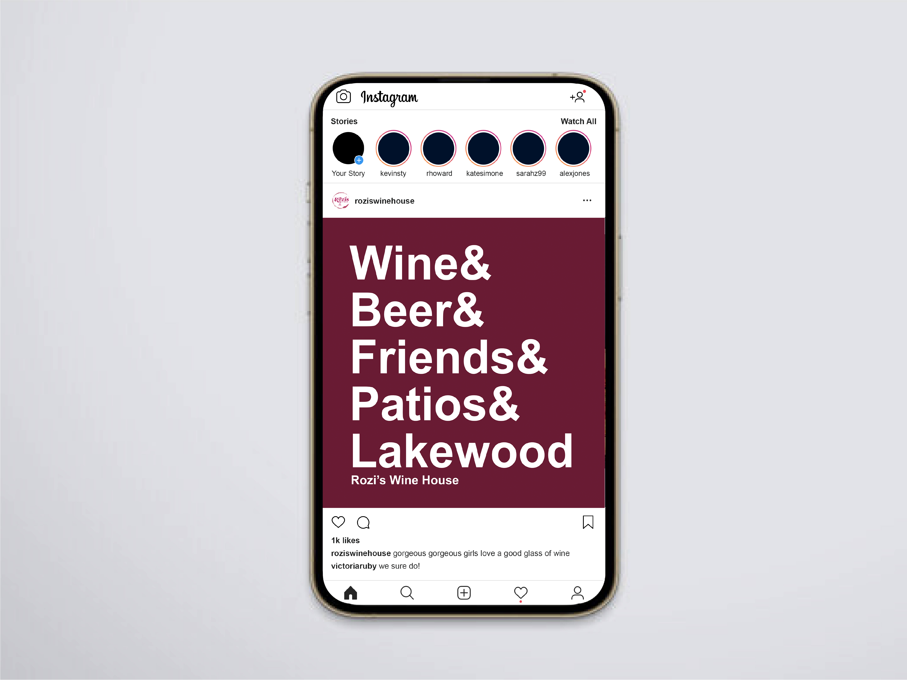

Their old, original logos I referenced.

The final design solution.

Wine Menu Printed Design. It uses subtle splashes of watercolor with a simple color palette that highlights the wines.

Business Cards for Rozi's. It helps demonstrate how the logo's flexibility and how it can be broken up but still be easily recongizable to the brand and it's integrity.

The website redesigned -- it comes with a pop up modal on the landing page.


Here, is the landing page where you can scroll through the main highlights of the brand.


Here, is where you can see how it would look when you hover over the navigation bar and when you click on the about page.



Here, are some examples of social media instagram campaign ads I mocked up for them.